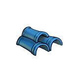

Получено: файл; исходный URL. Оригинальные байты с указанного зеркала; идентичность архивному файлу не проверена.
Синяя черепица
Мой Мир; историческая таблица, дата редакции не установлена- Тип
- нет данных
- Покупка
- 1 Зб; место покупки не указано
- Продажа
- 1 500 монет
- Как получить
- Изготовить в Снеговике или Цветнике
- Применение
- Участвует в строительстве: Замок Белый дом
- Особенности
- нет данных
- Версия и дата
- Мой Мир; историческая таблица, дата редакции не установлена


Данные по источнику · Мой Мир · 20.06.2011
Предварительно: один источник; требует сверки. Требуется сверка.
- Покупка
- 1 зомбаксов (по источнику)
- Продажа
- 1 500 монет
- Получение
- Изготовление в Снеговике или Цветнике
- Применение
- Замок, Белый дом
Данные по источнику · ВКонтакте, ZOMBIA · 28 Июня 2011, 21:19; дата редакции не установлена
Предварительно: Данные одной исторической фанатской страницы; цифры и подписи изображений требуют сверки. Описание и условия сохранены по колонкам без додумывания.. Требуется сверка.
- Описание материала
- [изображение: Синяя черепица, зомби ферма, зомби мания] Синяя черепица 1500 монет 1 Зомбакс
- Участвует в строительстве
- нет текстовых данных; возможны неподписанные изображения
- Как достать
- Произвести в Снеговике Произвести в Цветике Выиграть в Рулетку
- Участвует в создании
- нет текстовых данных; возможны неподписанные изображения
Данные по источнику · браузерная версия; платформа не указана · дата редакции неизвестна
Предварительно: Подписи и последовательность пиктограмм перенесены без автоматического толкования. Названия, цены и направления стрелок требуют визуальной сверки; возможны ошибки самого сайта.. Требуется сверка.
- Колонка 1 в порядке пиктограмм
- [подпись: Синяя черепица; файл sinyaya_cherepica.png] [подпись: Стоимость (Зомбаксов); файл zombucks.png] 1 [подпись: Продажа; файл moneta.png] 1500
- Колонка 2 в порядке пиктограмм
- [значок: proizvoditsya.png] [подпись: Снеговик; файл snegovik.png] [подпись: Цветик; файл cvetik.png]
- Колонка 3 в порядке пиктограмм
- [значок: stroit.png] [подпись: Замок; файл zamok.png] [подпись: Белый Дом; файл beliy_dom.png] [подпись: Бассейн; файл basseyn.png]
- Колонка 4 в порядке пиктограмм
- [значок: sosdanie.png] [подпись: Красная черепица; файл krasnaya_cherepica.png] [значок: strelka.png] [подпись: Модернизированный Университет; файл universitet-modern.png]
- Колонка 5 в порядке пиктограмм
- [значок: bonus.png] [подпись: Модернизированный Склеп; файл sklep-modern.png]
Данные по источнику · браузерная Зомби Ферма / Зомби Мания; платформа требует проверки · дата URL не гарантирует дату редакции
Предварительно: Индивидуальная страница прочитана автоматически, подписи значков могут содержать ошибки; даты редакции и независимость от ЗомбиСити не установлены.. Требуется сверка.
- Основной блок страницы и подписи изображений
- Материал [иллюстрация: Синяя черепица] Синяя черепица Цена покупки: 1 [иллюстрация: Зомбаксы] Цена продажи: 1500 [иллюстрация: Монеты] Продать или купить Синюю черепицу можно в Обменке игры Зомби Ферма Материал Синяя черепица существовал в игре изначально. При желании Синюю черепицу можно перекрасить в Красную - была бы краска и нужная постройка. Синюю черепицу можно создать в Цветике и Снеговике: Синяя черепица [иллюстрация: Синяя черепица] = 5 Любовь [иллюстрация: Любовь] + 5 Стекло [иллюстрация: Стекло] [иллюстрация: Стрелка] Цветик [иллюстрация: Цветик] Синяя черепица [иллюстрация: Синяя черепица] = 3 Цемент [иллюстрация: Цемент] + 15 Черника с косточкой [иллюстрация: Черника с косточкой] [иллюстрация: Стрелка] Снеговик [иллюстрация: Снеговик] Синяя черепица участвует в создании материала: Красная черепица [иллюстрация: Красная черепица] Голубой купол [иллюстрация: Голубой купол] Крыша [иллюстрация: Крыша] Крыша без окна [иллюстрация: Крыша без окна] Синяя черепица участвует в строительстве построек: Замок [иллюстрация: Замок] Бассейн [иллюстрация: Бассейн] Белый дом [иллюстрация: Белый дом] Китайская стена [иллюстрация: Китайская стена] Китайская стена [иллюстрация: Китайская стена] Врата [иллюстрация: Врата] Японский сад [иллюстрация: Японский сад] Изумрудный склеп [иллюстрация: Изумрудный склеп] Склеп-призрак [иллюстрация: Склеп-призрак] Ужасный склеп [иллюстрация: Ужасный склеп] Полярная печка [иллюстрация: Полярная печка] Купол [иллюстрация: Купол] Перевал №2 [иллюстрация: Перевал №2] Синюю черепицу можно выиграть, найти в Чемодане туристов: Старое корыто [иллюстрация: Старое корыто] Склеп [иллюстрация: Склеп] Чемодан [иллюстрация: Чемодан туриста] Приз за квест: Коллекционер [иллюстрация: Коллекционер] Откуда ты? [иллюстрация: Откуда ты?] Синюю черепицу можно найти в сокровищах: Новогодняя елка [иллюстрация: Новогодняя елка] Вишневый торт [иллюстрация: Вишневый торт] Новогодняя елка [иллюстрация: Новогодняя елка] Новогодняя елка за дубл [иллюстрация: Новогодняя елка за дублоны] Новогодняя елка за зб [иллюстрация: Новогодняя елка за зомбаксы] Икебана [иллюстрация: Икебана] Синюю черепицу можно выкрутить в рулетке: Стрекоза Лариса [иллюстрация: Стрекоза Лариса]
Текст источника без реконструкции
Изготовить в Снеговике или Цветнике Участвует в строительстве: Замок Белый дом
Связанные сущности
нет проверенных связей — требуется сверка.